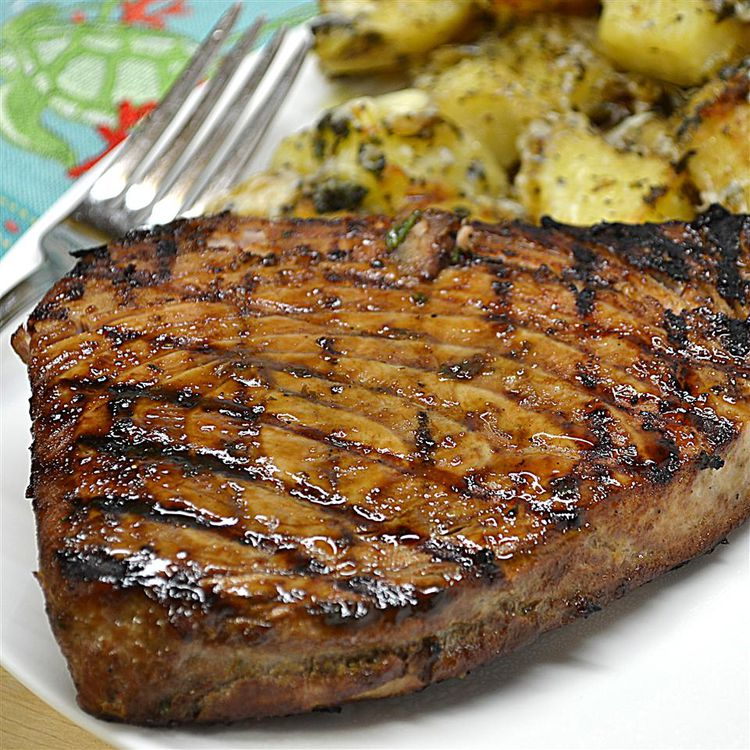

Marinated Tuna Steak
This tuna steak recipe uses a tangy marinade made with
orange juice, soy sauce, and garlic for a wonderful taste.

| Prep Time |
Cook Time |
Additional Time |
Total Time |
Servings |
| 10 mins |
10 mins |
30 mins |
50 mins |
4 |
Ingredients
- 1/4 cup orange juice
- 1/4 cup soy sauce
- 2 tablespoons olive oil
- 2 tablespoons chopped fresh parsley
- 1 tablespoon lemon juice
- 1 clove garlic, minced
- 1/2 teaspoon chopped fresh oregano
- 1/2 teaspoon ground black pepper
- 4(4 ounce) tuna steaks
Directions
- Step 1
- Mix orange juice, soy sauce, olive oil, parsley, lemon juice, garlic, oregano,
and pepper together in a large non-reactive dish until well combined.
Place tuna steaks in marinade and turn to coat. Cover the dish with plastic
wrap and marinate in the refrigerator for at least 30 minutes.
- Step 2
- Preheat an outdoor grill for high heat and lightly oil the grate.
Remove tuna steaks from the marinade and shake off excess; reserve marinade for basting.
- Step 3
- Cook tuna steaks on the preheated grill for 5 to 6 minutes; flip steaks and baste with reserved marinade.
Cook for an additional 5 minutes, or to desired doneness. Discard any remaining marinade.
Tips
Try topping your tuna steak with sautéed mushrooms
for a flavorful addition.
Return to home page